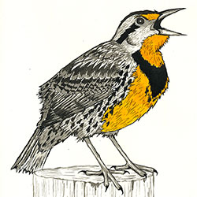
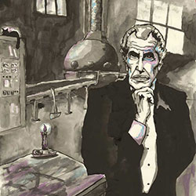

Art Gallery
-

Blue Jay in the Desert
2012
Ink & Watercolor on Paper
A blue jay would die in the desert. It would take years for it to adapt to that kind of climate and environment, and there are far too many native desert creatures that would prey upon it. The background of this watercolor and Ink Paintings is Monument Valley, Utah, and is adapted from a photograph seen in my book, “Open Range: From Monument Valley to the Mojave Desert”. For this painting, I wanted to try a new style: something more multi-colored and less sad-looking than my previous work; the blue jay’s cold blues would contrast the warm, earthy tones of the sacred Navajo land. Another significance of this painting is that it was the last piece I did at my temporary art studio in downtown Columbus, Ohio in May 2012.
-

Corman and Poe
2007
Oil on Canvas
Near the end of my undergraduate career, I became obsessed with the B-movie filmmaker Roger Corman and his adaptations of the works of Edgar Allen Poe. Despite being some of his most professional-looking films, most were completed in about 2 weeks. For this painting, I wanted to implement a visual style that was representative of Corman’s high quality/fast production methods. To achieve this, I tried to focus on realistic-looking faces, while making other elements look like I took shortcuts. This rough/polished dichotomy later became a staple of much of my paintings, where the goal is to create a discourse between realism and abstraction. The canvas itself was handmade and engineered to have the exact same dimensions as a 16:9 aspect ratio movie frame.
-

Eastern Meadowlark
2014
Ink & Watercolor on Paper
This is one of the birds I painted for my second book, which is a collection of paintings of birds found in the Chicagoland area. It was the second painting I intentionally did for the book and was completed in November 2014. What makes it unique among the paintings for that book is that the only color applied is for the bird's bright yellow breast; the brown parts of the bird are done in gray with ink. I remember seeing these birds all year round in my parent's backyard growing up, and the most clearly identifying feature was always the yellow breast with the black ring around its neck. I'm very happy with how this turned out, especially the range of values in its wings. I opted not to give this painting a background, so that all the attention would be on the yellow breast and ink detail.
-

Eastern Screech Owl
2014
Ink on Paper
Although this Screech Owl painting will appear in my forthcoming bird painting book, it was completed months before I even had the idea to do such a book. In fact, the success it found on Instagram was part of what inspired me to further pursue birds as a subject matter for my art. The painting is all India Ink on watercolor paper, and I think it works quite well with such high-contrast values and no color. It was given as a present to my Mother and now hangs in their living room.
-

Eternal Sunshine
2012
Ink & Watercolor on Paper
For a long time, I had wanted to paint a tribute to the film "Eternal Sunshine of the Spotless Mind" (directed by Michael Gondry and written by Charlie Kaufman). The scene at the bottom of the image is when Jim Carrey's character Joel, in a dream, appears in front of a dilapidated version of his own childhood home. Joel looks up to the sky in frustration and fear as he fights against his memories being erased. Compositionally, I made it so Joel is looking up to the sky, but also at Clementine; Clementine is looking away because, at that point, she has already erased Joel from her memory. This is one of the paintings I did while working out of a temporary studio in downtown Columbus, OH in May 2012.
-

Frank and the Cellar Door
2012
Ink & Watercolor on Paper
After seeing my "Eternal Sunshine of Spotless Mind" movie poster, a friend asked me to do a poster in the same style for the 2001 film "Donne Darko." This portrait is of "Frank"—the imaginary bunny rabbit character in the movie—and a cellar door. In the film, Drew Barrymore's character tells Donnie how Mark Twain considered "cellar door" to be the most beautiful word combination in the English language. The number at the top in red is the number Donnie writes on his arm that is supposedly how long until the world will end. This is one of the paintings I did while working out of a temporary studio in downtown Columbus, OH in May 2012.
-

Frederic Chopin
2012
Ink & Watercolor on Paper
I’ve always enjoyed listening to Frederic Chopin’s music while doing art, so I figured I owed him a portrait for all the inspiration he provided me. This painting was one of a few I completed at an art studio I leased in downtown Columbus, Ohio in May 2012. When I researched existing portraits of Chopin, I noticed that he looks very different from one portrait to the next. Due to the constant illness he suffered in life, there were dramatic differences in his facial features depending on the year it was created. My portrait was based primarily on Louis-Auguste Bisson's daguerrotype photo of Chopin (taken right before his death), as well as an 1847 painting of him by Ary Scheffer. In the top of the painting, I transcribed a few measures of Chopin’s Sonata No. 2 in Bb minor. To the right of Chopin, I depicted the sculpture of the muse of music, Euterpe, who sits atop Chopin’s tomb in Pere Lachaise Cemetery in Paris.
-

French Quarter Motorcycle Guitarist
2011
Oil on Paper
This portrait I painted is based on a stranger I saw in the French Quarter district of New Orleans, LA in Spring 2010. When I first posted it online, someone left me a comment saying his name is "Stroker." The background was based on a different photography I took while in New Orleans, and I must say I quite enjoyed painting those green doors. The area that looks unfinished in the lower left corner symbolizes how no one will ever know the full story behind this man. I should also mention that I gave him a couple dollars after taking his photo.
-

Jim Clark Driving The Lotus 49
2014
Ink & Watercolor on Paper
This painting of Jim Clark driving his iconic Lotus Formula One car was given to my Dad as a Christmas present in 2014. I decided to post it on my website today (March 4, 2015), as it would have been Jim’s 79th birthday. He is considered by some to be the greatest F1 driver in history. This portrait depicts Clark driving the Lotus 49 at the 1968 British Grand Prix — the last race Clark ever won (or finished) before his untimely death. The Lotus 49 featured a V8 Ford-Cosworth DFV engine, which is one of the most successful engines in F1 history. This was one of the first paintings of a car I had done in many years and I’m very pleased with it.
-

Nine to Five
2007
Oil on Wood, Triptych
This is the largest work of art I have ever completed, consisting of three separate 2' x 4' MDF wood board panels. In addition to water-soluble oil paints, I used newspapers from around the world, cookbook pages, restaurant advertisements, and construction blueprints. It was completed at the end of my undergraduate career and I knew I'd need to get a "real job" soon. While I knew this "real job" wouldn't involve painting or drawing, I felt that ALL jobs involve creative thought. I wanted to show non-art-related professions that require some form of creativity. I used myself as a model to show that this was a personal struggle, not just a societal observation.
-

Quanah Park, Last Chief of the Comanches
2012
Gel-Ink Pen on Paper
After reading "Empire of the Summer Moon" by S.C. Gwynne, I was inspired to do a portrait of Quanah Parker—the last chief of the Comanche Indians, and one of the very last North American Indian chiefs to surrender to the U.S. Government. Quanah was born of a Comanche man and a white woman, who had been captured as a child and raised in the Comanche tradition. I was inspired by Quanah’s intense facial features, but also by the intensity of his eyes, which appear very keen yet somewhat empty inside. This piece is also a great example of my attempt to execute proper cross-hatching, which contrasts the more fluid brushwork found in my paintings.
-

Swamp Thing
2014
Ink & Watercolor on Paper
Swamp Thing is easily one of the most powerful comic book characters — able to control all plant life on Earth and regenerate his body at will. When I painted this, I was going through a big comic book phase and reading all of Alan Moore's amazing Swamp Thing comics from the 1980s. This is based on Stephen Bissette's version of Swampy, who penciled the Alan Moore Swamp Thing comics.
-

The Melting Doge
2011
Oil on Paper
After I visiting Venice in 2010, I became interested in their history and decided to paint a portrait of the 16th-century Doge, Leonardo Loredan. The obvious source material for this was Giovanni Bellini’s famous Portrait of Loredan. However, I wanted to use more expressive brush strokes and unusual colors than Bellini's, and the goal was not necessarily to create a perfect likeness. I hoped to give the composition a "fluid" style and feeling, as a reference to the importance of water in Venetian culture. To the right of Loredan, I depicted an emblem of St. Mark’s Lion—based on a real one that is actually dedicated to Loredan. In the yellow background, there is a minimalist map of Venice and the Grand Canal.
-

The Murder of Mingo Jack, book cover
2010
Oil on Wood
In late 2009, my cousin James Stone contacted me about designing the cover for a local New Jersey history book he had written. "The Murder of Mingo Jack: New Jersey's only nineteenth century lynching" tells the story of Samuel "Mingo Jack" Johnson, who was wrongfully accused of lynching a white girl. In 1886, he was lynched by an angry mob at a jail lockup in Eatontown, New Jersey—not far from where my cousin and I grew up. As there are no existing photographs of Mingo, this meant that my painting would become the only portrait ever made of this man. Following the release of this book, a memorial marker was installed at the spot where Mingo Jack was lynched. My cousin James has appeared at numerous events and book signings for the book, including one at the Monmouth County Library in Shrewsbury, NJ—right down the street from where I grew up. It was an honor to see my artwork displayed in that public library, after all the time I had spent there as a child.
-

Vincent Price in His Laboratory
2006
Ink on Paper
It seems fitting that the best ink portrait I did during my undergraduate years (in my opinion) was of my favorite actor, Vincent Price. Of all the portraits I’ve ever painted, I still feel that this is the best likeness. I feel that the way I controlled the gray values and colors here is among my best. The background the portrait is original, but loosely based on Tim Burton’s “Edward Scissorhands” (Price’s last film). I sold this drawing to a college roommate of mine in 2007.


{kind=link}
{kind=link}